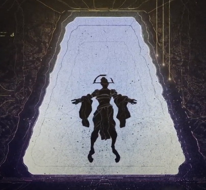

The best place to look on what it wants is to discover how it came to exist. Albrect Entrati was the first person to discover it in the Void. He crossed through the Wall of Lohk 'a wall between worlds' entering the void, where he encountered a doppleganger.
